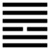

Thiên Trạch Lý (履 lǚ)
Đầu quẻ Tiểu Súc đã nói súc còn có nghĩa là chứa, nhóm (như súc tích)
Tự quái truyện dùng nghĩa đó mà Giảng: khi đã nhóm họp nhau thì phải có trật tự, có trên có dưới, không thể hỗn tạp được, nghĩa là phải có lễ. Sống trong xã hội phải theo lễ, dẫm lên cái lễ, không chệch ra ngoài (chúng ta thường nói dẫm lên dấu chân của một người để diễn cái ý theo đúng đường lối người ấy); mà dẫm lên, chữ Hán gọi là ☲, do đó sau quẻ Tiểu súc, tới quẻ Lí. Cách giải thích đó có phần nào gượng ép.
Thoán từ:
履 虎 尾, 不 咥 人, 亨 ．
Lí hổ vĩ, bất điệt nhân, hanh.
Dịch: Dẫm lên đuôi cọp, mà cọp không cắn, hanh thông.
Giảng: Trên là dương cương, là Càn, là trời: dưới là âm nhu, là Đoài, là chằm, vậy là trên dưới phân minh lại hợp lẽ âm dương tức là lễ, là lý. Có tính âm nhu, vui vẻ đi theo sau dương cương thì dù người đi trước mình dữ như cọp, cũng tỏ ra hiền từ với mình, cho nên bảo rằng dẫm lên đuôi cọp mà cọp không cắn. Ba chữ “lý hổ vĩ” chính nghĩa là dẫm lên đuôi cọp, chỉ nên hiểu là đi theo sau cọp, lấy sự nhu thuận, vui vẻ mà ứng phó với sự cương cường.
Thoán truyện bàn thêm: Hào 5 quẻ này là dương mà trung, chính, xứng với ngôi chí tôn, chẳng có tệ bệnh gì cả mà lại được quang minh.
Đại tượng truyện: bảo trên dưới phân minh (có tài đức ở trên, kém tài đức ở dưới) như vậy lòng dân mới không hoang mang (định dân chí) không có sự tranh giành.
Ý nghĩa các hào:
1. 初 九 : 素 履, 往, 无 咎 ．
Sơ cửu: tố lý, vãng, vô cữu.
Dịch: hào 1, dương : giữ bản chất trong trắng mà ra với đời thì không có lỗi.
Giảng: hào 1 này như người mới ra đời, còn giữ được bản chất trong trắng (ý nghĩa của chữ tố) chưa nhiễm thói đời, vì là hào dương, quân tử, có chí nguyện, cứ giữ chí nguyện mình thì không có lỗi.
2. 九 二 : 履 道 坦 坦, 幽 人 貞 吉 ．
Cửu nhị: Lý đạo thản thản, u nhân trinh cát.
Dịch: Hào 2, dương: như đi trên đường bằng phẳng, cứ một mình giữ vững đường chính thì tốt.
Giảng: Hào 2, dương : như đi trên đường bằng phẳng, cứ một mình giữ vững đường chính thì tốt.
Giảng: Hào dương này đắc trung, vẫn là hiền nhân, quân tử, bình thản giữ đạo trung không để cho lòng rối loạn thì tốt.
Tuy có hào 5 ở trên ứng với, nhưng 5 cũng là dương, không hợp, (phải một dương một âm mới tìm nhau, hợp nhau, viện nhau) cho nên bảo hào này là cô độc.
Chúng ta để ý: quẻ Càn, hào 2 và hào 5 cũng đều là dương cả, mà Hào từ bảo 2 và 5 nên tìm nhau mà làm việc; còn quẻ Lý này thì không, như vậy là phải tùy theo ý nghĩa của quẻ (tùy thời) mà giảng.
3. 六 三 : 眇, 能 視 ; 跛, 能 履 ． 履 虎 尾, 咥 人, 凶 ． 武 人 為 于 大 君 ．
Lục tam: Miễu, năng thị; bả, năng lý.
Lý hổ vĩ, diệt nhân, hung. Võ nhân vi vu đại quân.
Dịch:Hào 3, âm: chột (mà tự phụ là) thấy tỏ, thọt (mà tự phụ là) đi nhanh, như vậy thì nguy như dẫm lên đuôi cọp mà bị nó cắn. Đó là kẻ vũ phu mà đòi làm việc của một ông vua lớn.
Giảng: Hào này âm nhu mà ở ngôi dương cương, bất chính, bất trung, trên dưới đều là hào dương cả, không lượng tài mình kém (âm) mà đua đòi theo các hào dương, không khác người thọt tự khoe là đi nhanh; đó là hạng võ phu mà đòi làm một ông vua lớn, sẽ gặp họa, như dẫm lên đuôi cọp, bị cọp cắn.
4. 九 四 : 履 虎 尾 ． 愬 愬 終 吉 ．
Cửu tứ: Lí hổ vĩ, sách sách (hoặc sóc sóc)chung cát.
Dịch: Hào 4, dương: Dẫm lên đuôi cọp, nhưng biết sợ hãi, nên quẻ sẽ tốt.
Giảng: Hào này, dương mà ở vị âm, cũng bất trung, bất chính như hào 3, cũng ở sau một hào dương cương, cũng như dẫm lên đuôi cọp, nhưng hào 3 hung, hào 4 cát, chỉ do lẽ: 3 bản chất nhu, tài kém, u mê mà ở vị dương, chí hăng; còn 4 bản chất cương, có tài, sáng suốt mà ở vị âm, biết sợ hãi, thận trọng.
5. 九 五 : 夬 履 貞 厲 ．
Cửu ngũ: Quyết lý, trinh lệ.
Dịch: Hào 5, dương : Quyết tâm hành động quá thì tuy chính đáng cũng có thể nguy.
Giảng: Hào 5 đắc chính, đắc trung,rất tốt, nhưng ở địa vị chí tôn trong quẻ Lý (nói về cách ở đời) thì e có lòng cương quyết quá mà tự thị, ỷ thế, mà hóa nguy.
6. 上 九: 視 履, 考 祥 ． 其 旋, 元 吉 ．
Thượng cửu: Thị lý, khảo tường, kỳ toàn, nguyên cát.
Dịch: Hào trên cùng, dương, xem cách ăn ở trong đời người, cho nên Hào từ diễn ý nghĩa của toàn quẻ chứ không diễn ý nghĩa của riêng hào cuối. Cũng là một lệ ngoại như hào cuối cùng quẻ Tiểu súc.
Quẻ này tên là Lí có nghĩa là lễ, là dẫm lên, nhưng cả 6 hào đều nói về cách ăn ở trong suốt đời người : mới ra đời thì phải giữ tính chất phác trong trắng, rồi sau giữ vững đường chính (hào 2); biết sức mình, đừng tự phụ (hào 3) để tránh nguy, biết thận trọng, sợ hãi thì tốt (hào 4), và ở địa vị cao nhất, đừng ỷ thế mà cương quyết quá (hào 5), cách ăn ở được như vậy cho tới cuối đời thì tốt không gì bằng.
Chúng ta để ý: Quẻ này cũng chỉ có một hào âm mà không có nghĩa thống lĩnh quần dương như quẻ tiểu súc. Như vậy là biến dịch.